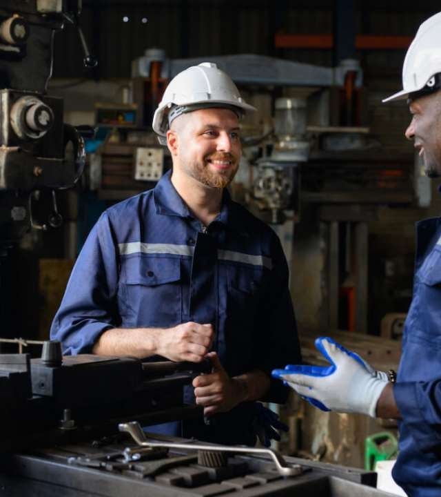
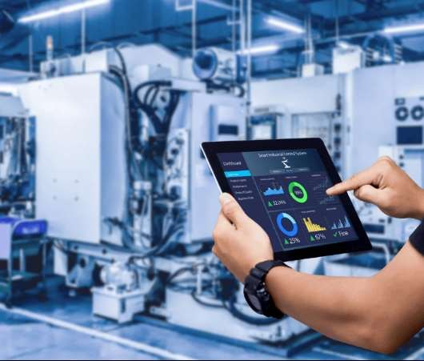
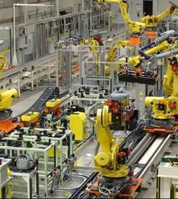
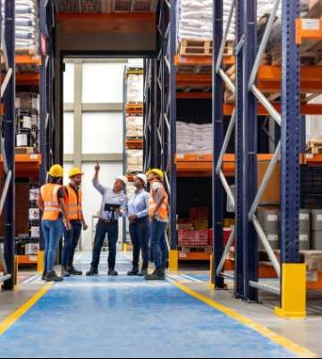
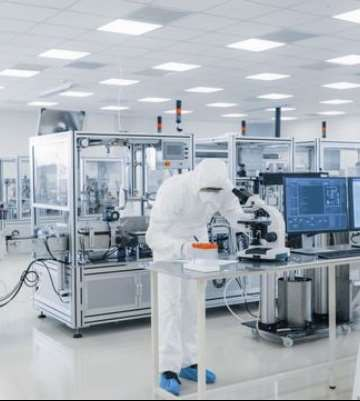
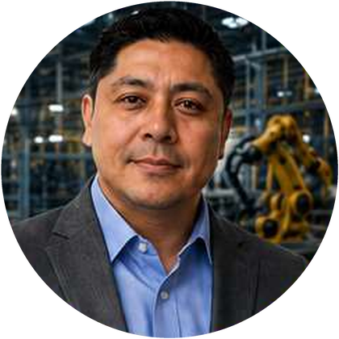

Tiempo Muerto
Maquinaria o personal inactivo esperando materiales o instrucciones.
No vendemos consultoría teórica. Implementamos soluciones en piso que generan resultados financieros medibles: mayor productividad neta, menores costos operativos y mejores tiempos de ciclo.
Hoy las empresas enfrentan entornos cada vez más complejos. Reconocer el problema estructural es el primer paso para revertirlo.
La mayoría de estos problemas estructurales pueden solucionarse mediante una correcta estrategia operativa.
Nuestra metodología identifica las deficiencias invisibles y establece controles para asegurar el crecimiento sostenido.
Cada uno de estos factores representa capital que desaparece todos los días.
Maquinaria o personal inactivo esperando materiales o instrucciones.
Doble esfuerzo por errores de producción o falta de calidad.
Capital inmovilizado en excesos o faltantes críticos.
Fallos en la transmisión de datos entre departamentos.
Defectos que impactan directamente al cliente final.
Costos ocultos de contratación y curva de aprendizaje.
Imposibilidad de medir y controlar la eficiencia real.
Decisiones gerenciales sin respaldo de datos duros.
No solo contamos con la teoría: hemos implementado cambios reales en piso y conocemos de primera mano las ventajas y desventajas de cada decisión. Somos expertos en proyectos autosustentables.
Trato directo y especializado. Usted habla con los consultores que ejecutan el proyecto, no con intermediarios.
Nada de «copiar y pegar». Cada estrategia se diseña sobre la realidad operativa de su planta.
Consultores con experiencia real en piso de producción, no únicamente en el escritorio.
Hacemos que las cosas sucedan. Acompañamos la ejecución hasta que la mejora queda funcionando.
Tres frentes de intervención que trabajan de forma coordinada sobre su operación.


Siete líneas de servicio que cubren desde la cadena de valor y la certificación de calidad hasta el cumplimiento normativo en seguridad, protección civil y medio ambiente.
Intervención integral de extremo a extremo (suministro, logística, producción y distribución) para eliminar cuellos de botella y maximizar rentabilidad.
Diseño, implementación y auditoría de Sistemas de Gestión de Calidad (especialidad ISO 9001). Garantizamos estandarización global.
Formación técnica y operativa con valor oficial. Emisión de constancias de competencias laborales avaladas por la STPS.
Diagnósticos visuales y matrices de riesgo operativo para prevenir accidentes, proteger infraestructura y salvaguardar al personal.
Desarrollo de Programas Internos de Protección Civil (PIPC), análisis de vulnerabilidad y cumplimiento de requerimientos para evitar clausuras.
Asesoría para disposición de residuos peligrosos, auditorías ambientales y cumplimiento de normatividad SEMARNAT y PROFEPA.
Implementación del Sistema de Administración de Seguridad Industrial, Seguridad Operativa y Protección al Medio Ambiente.
Diseñamos estrategias específicas. Cuéntenos su caso y le proponemos una ruta de intervención.
Solicitar diagnóstico →Colaboramos directamente en las instalaciones del cliente para comprender la realidad de sus procesos, identificar oportunidades ocultas y ejecutar mejoras con rapidez y eficacia operativa.
Liberamos capacidad instalada sin necesidad de inversión adicional.
Atacamos las pérdidas ocultas que erosionan el margen día con día.
Procesos estandarizados y controlados de principio a fin.
Personal capacitado y alineado con los indicadores del negocio.
Un enfoque sistemático para garantizar transformaciones operativas exitosas y sostenibles.
Mapeo de procesos e identificación de la causa raíz de las ineficiencias.
Desarrollo de estrategias a la medida utilizando ingeniería y tecnología.
Ejecución en piso y capacitación intensiva del personal operativo.
Medición de KPIs, ajustes finos y establecimiento de la mejora continua.
Industrias con procesos exigentes, altos volúmenes y normatividad estricta.

Automotriz, Plásticos, Empaque, Textil

Cadena de Suministro, Distribución, Compras

Alimentos, Procesos Regulados
Consultores con experiencia real en piso. Estas son las personas que estarán en su planta.

Experto en transformación disruptiva, optimización de procesos y cadena de suministro.
Implementación de sistemas de seguridad industrial, cumplimiento normativo y prevención de riesgos.
Optimización de mantenimiento preventivo, predictivo y confiabilidad operacional.
Integración de tecnologías, automatización y digitalización para incrementar la productividad.
Implementación de programas de Protección Civil, cumplimiento ambiental y sostenibilidad empresarial.
No llegamos solo a decirle qué hacer: trabajamos junto con su equipo hasta lograr que las mejoras funcionen. Y toda cultura comienza con una decisión.
Tomar la decisión hoyContáctenos para agendar una visita de diagnóstico en sus instalaciones.
Transformemos juntos el potencial de su empresa en resultados medibles.
100% in situ: nos trasladamos a sus instalaciones para trabajar directamente sobre sus procesos.